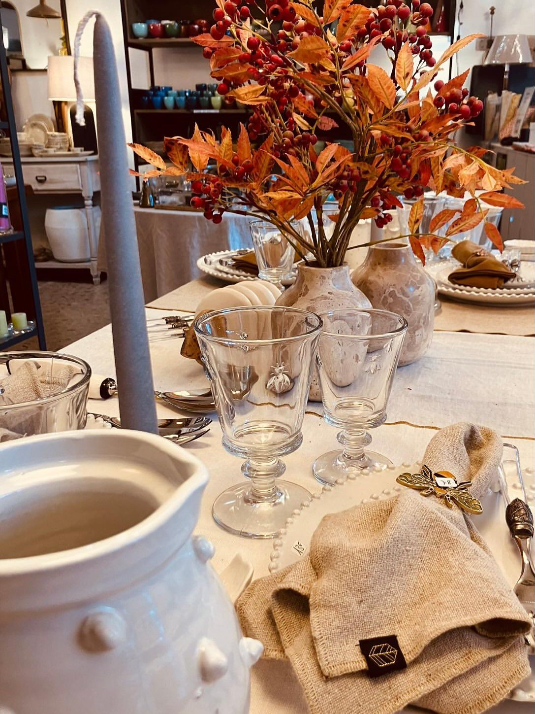
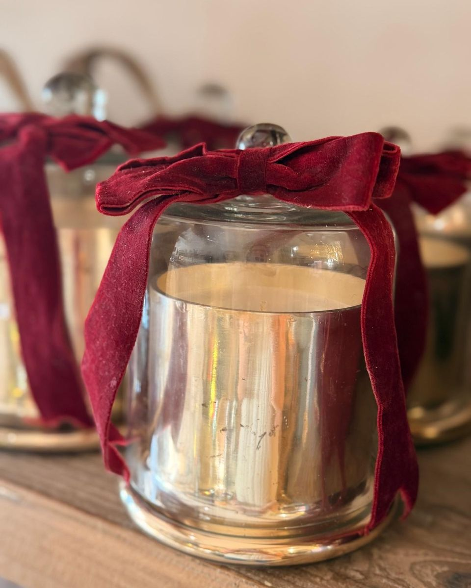
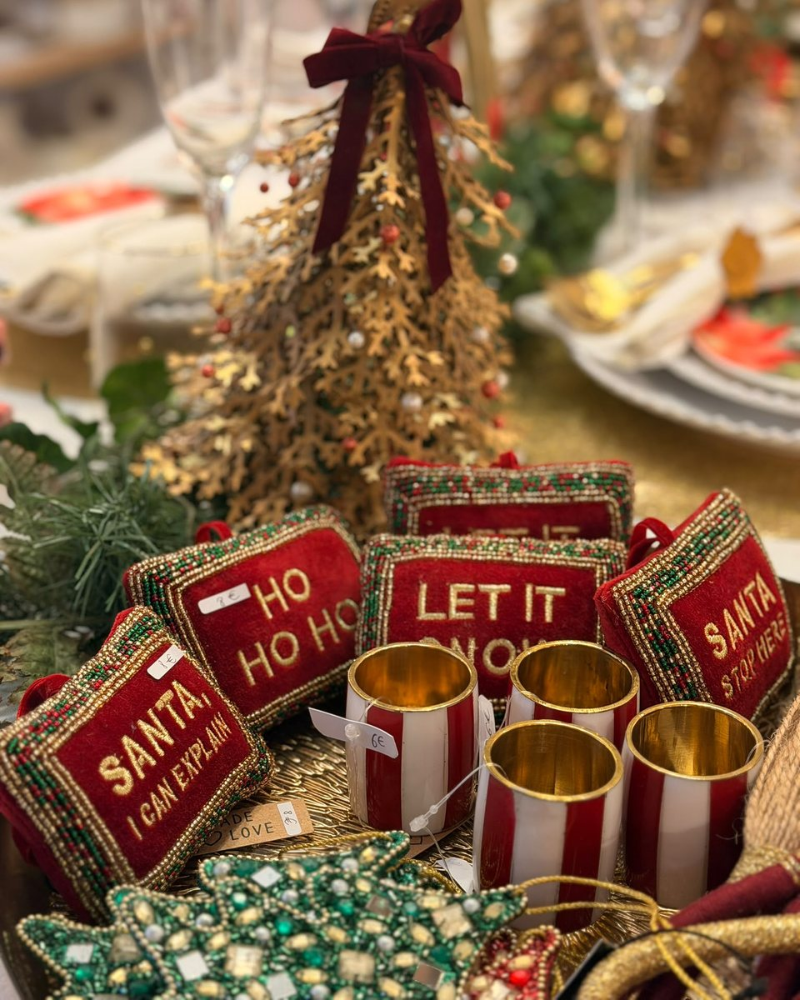
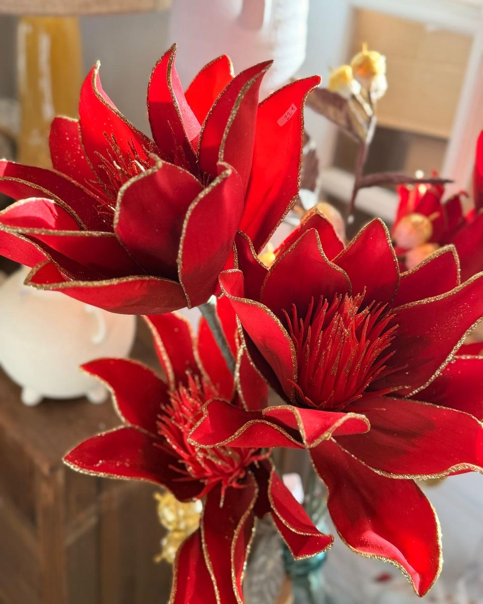

Les Guides · Arts de la table
La table de Noël
« Convier quelqu'un, c'est se charger de son bonheur pendant tout le temps qu'il est sous notre toit. »



Comment dresser une jolie table de Noël sans y passer la nuit ? À la boutique, on nous pose la question chaque hiver. Voici, en cinq temps, la façon dont Lucie s'y prend : une base simple, des objets qui ont une histoire, et beaucoup de lumière.

I
Quelles couleurs pour une table de Noël ?
Tout part de la nappe. Un lin écru ou sable fait un fond calme, sur lequel tout le reste ressort : c'est notre base préférée, d'une année sur l'autre.
Ensuite, deux couleurs, pas davantage. Le rouge et l'or pour une table de fête classique, le vert sapin et le doré pour une table plus forestière, ou le blanc et le verre pour une table toute en lumière. Au-delà de trois teintes, l'œil ne sait plus où se poser.
L'astuce de LucieRepassez la nappe directement sur la table, avec un linge humide : plus de pli au milieu.
II
Où placer les verres et les couverts ?
La table « à la française » suit quelques règles simples. On les respecte d'abord parce qu'elles rendent le repas plus confortable : chacun trouve ce dont il a besoin, dans l'ordre où il en a besoin.
- L'assiette à deux doigts du bord de la table, bien au centre de la chaise.
- Les fourchettes à gauche, dents tournées vers la nappe ; le couteau à droite, lame vers l'assiette.
- La cuillère à soupe, s'il y a une entrée liquide, à droite du couteau.
- Les couverts à dessert au-dessus de l'assiette : fourchette manche à gauche, cuillère manche à droite.
- Les verres en ligne au-dessus de l'assiette, du plus grand au plus petit, de gauche à droite : eau, vin rouge, vin blanc. La flûte se place juste derrière.
- L'assiette à pain en haut à gauche, au-dessus des fourchettes.
- La serviette pliée sur l'assiette, ou à gauche des fourchettes.
On pose les couverts dans l'ordre du repas : ceux de l'entrée à l'extérieur, ceux du plat contre l'assiette.

III
Quel centre de table choisir ?
La seule vraie règle : on doit se voir d'un bout à l'autre de la table. Gardez le centre bas, ou très fin, pour que la conversation passe au-dessus.
Plutôt qu'un grand bouquet, Lucie compose un chemin : deux petits sapins dorés, quelques boules posées à plat, une tige de fleurs rouges couchée sur la nappe. On répète deux ou trois fois le même motif sur la longueur, et la table paraît pensée.
L'astuce de LuciePensez aux plats : laissez au centre la place d'un grand plat de service.

IV
La lumière, surtout
C'est elle qui fait la table de fête. Baissez le plafonnier, et multipliez les petites sources : des chandelles à des hauteurs différentes, des photophores entre les assiettes, une guirlande dans un vase en verre.
Avec des enfants, ou près d'une nappe en lin, les bougies LED en vraie cire font illusion. Et gardez les bougies parfumées pour le salon : à table, c'est le repas qui doit sentir bon.

V
Les petites attentions
Ce sont elles dont on se souvient. Une serviette nouée d'un ruban de velours, une fleur glissée dans le pli, un prénom écrit à la main sur une étiquette.
Et pourquoi pas un tout petit cadeau sous chaque serviette : une boîte d'allumettes illustrées, une boule de Noël, un coquetier. Il se garde, et la table continue de vivre après la fête.
À retrouver à la boutique